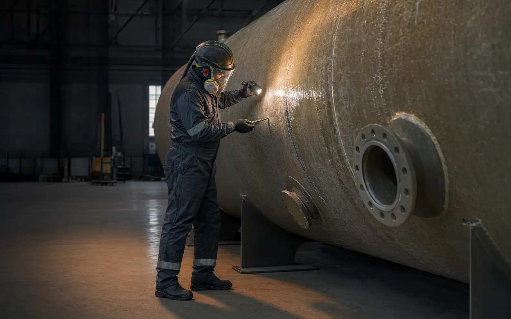

композитные резервуары
01Ремонт ёмкостного оборудования
Ремонтируем
промышленные
резервуары
Концепция сайта о восстановлении герметичности и рабочего ресурса стеклопластиковых ёмкостей с понятной подачей услуг и процесса.
Демонстрационная компания
РезервТехДемонстрационный проект NMRXVisual
Промышленный лендинг
Концепт / 2026
стеклопластиковые ёмкости
защитные конструкции
промышленные ёмкости
02 / Услуги
Восстанавливаем
вместо замены
От поиска причины протечки до усиления корпуса и сдачи оборудования в эксплуатацию.
Диагностика и дефектовка
Оценка глубины повреждений, причин протечки и фактического состояния конструкции.
контрольдефектовка
↗Ремонт стеклопластика
Восстановление стенок, днища, горловины и патрубков композитных резервуаров.
FRP / GRPламинат
↗Устранение течей
Герметизация трещин, сквозных повреждений, стыков и вводов.
локальный ремонтгерметизация
↗Усиление корпуса
Подбор решения для повышения несущей способности ослабленных зон.
усилениекомпозитные слои
↗Защитные покрытия
Подбор и нанесение внутренних покрытий с учётом рабочей среды.
футеровказащита
↗Плановое обслуживание
Регулярный осмотр, профилактика и документирование состояния оборудования.
регламентотчёт
↗Не уверены в причине?
Начните с инженерной диагностики
В реальном проекте здесь размещается призыв прислать фотографии и исходные данные для предварительной оценки.
Обсудить с автором ↗03 / Подход
Работаем как
инженерная служба

FRP
Демонстрационный визуальный материал
Промышленная
стилистика
Узкая специализация
Фокус демонстрационной компании — промышленные резервуары и композитные конструкции.
Ремонт на объекте
Сценарий услуги предусматривает оценку возможности ремонта без перевозки ёмкости.
Инженерный контроль
В структуре проекта предусмотрены дефектовка, описание технологии и контроль результата.
Понятные условия
Сроки, объём работ и ответственность на реальном проекте должны закрепляться договором.
04 / Сценарии
Типовые задачи
в формате кейсов
Ниже показаны демонстрационные сценарии, а не подтверждённые выполненные работы.
Восстановление подземной пожарной ёмкости
Демонстрационный кейс
Ремонт внутреннего химстойкого слоя
Демонстрационный кейс
Плановое восстановление комплекса ёмкостей
Демонстрационный кейс
05 / Этапы
От заявки
до запуска
Структура показывает посетителю, что происходит на каждом этапе проекта.
- 01
Получаем вводные
Фотографии, размеры ёмкости, описание среды и признаки повреждения.
- 02
Проводим обследование
Фиксация дефектов и определение доступа к зоне ремонта.
- 03
Готовим решение
Согласование технологии, материалов, сметы и сроков.
- 04
Выполняем ремонт
Подготовка поверхности и восстановление конструкции по выбранной технологии.
- 05
Сдаём результат
Контроль результата и передача согласованного комплекта документов.
Пример блока качества
Не «заделывать».
Восстанавливать.
На реальном сайте здесь можно показать согласованный порядок контроля и перечень документов исполнителя.
- 01Дефектная ведомость
- 02Фотофиксация этапов
- 03Контроль результата
- 04Рекомендации по эксплуатации
- 05Условия по договору
06 / FAQ
Частые
вопросы
Хотите такой же сайт для своей компании? Напишите автору проекта.
WhatsApp: +7 995 647-88-91 ↗01Можно ли выполнить ремонт без демонтажа?
Возможность ремонта на объекте зависит от материала, характера повреждения и доступа к рабочей зоне. Решение принимают после обследования.
02От чего зависит срок ремонта?
Срок определяют площадь и глубина повреждения, материал резервуара, подготовка поверхности и время отверждения ремонтного состава.
03Какие данные нужны для оценки?
Обычно достаточно фотографий повреждения, габаритов, материала, назначения ёмкости и описания рабочей среды.
04Как определяется технология ремонта?
Технологию выбирают после дефектовки с учётом конструкции, нагрузок, рабочей среды и требований к дальнейшей эксплуатации.
05Какие документы могут потребоваться?
Состав документов согласуют до начала работ. Он может включать дефектную ведомость, фотофиксацию, акт и рекомендации по эксплуатации.
06Это сайт действующей ремонтной компании?
Нет. «РезервТех» — нейтральная демонстрационная компания, созданная для показа дизайна и разработки NMRXVisual.
07 / Связь с автором
Обсудим
ваш сайт
Заполните форму — после проверки откроется WhatsApp NMRXVisual с подготовленным сообщением.
Написать напрямую +7 995 647-88-91- Статус
- Демонстрационный кейс
- Формат
- Сценарий для портфолио
- Описание